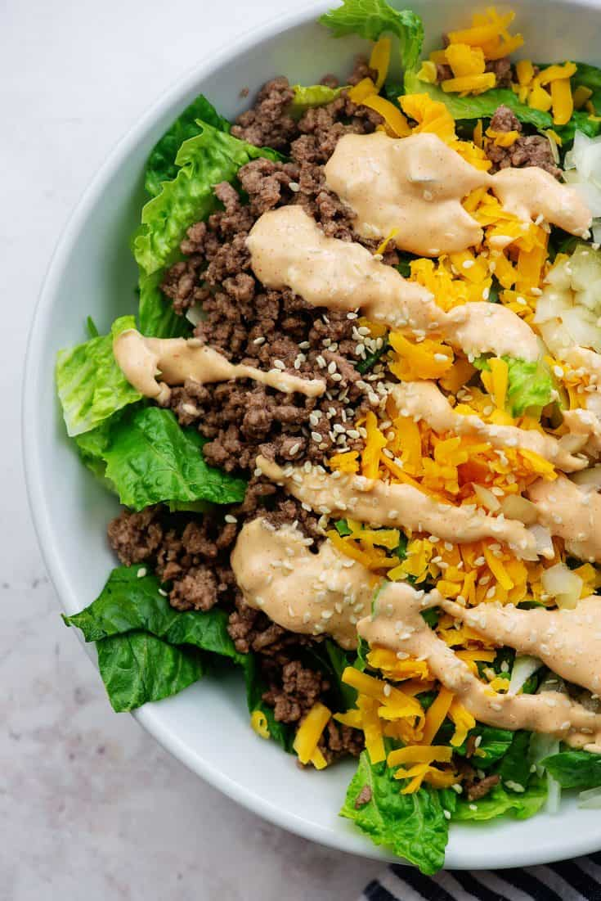

Big Mac
Description
This recipe is a keto version of a McDonalds Big Mac
Ingredients for Salad
- drizzle of avocado oil
- 1 small pack extra lean ground turkey
- 1 small finely diced yellow onion
- 4 diced cloves of garlic
- 1/2 iceberg lettuce finely chopped
- 1/2 cabbage
- 1/2 english cucumber finely chopped
Ingredients for Dressing
- 1/4 cup olive oil
- juice of 1/2 lemon
- 1/2 cup plain yogurt or sour cream
- 1/4 jalapeno optional
- 1/2 avocado
- 1/2 cup parsley
- 1 tablespoon honey dijon mustard
Steps
- add oil of choice on a medium high heat pan.
- add onions and saute for a few minutes until translucent.
- add any lean ground meat of choice and begin to break it up and fry it up until all of the liquid has evaporated and it's starting to get golden-takes around 10 minutes.
- add garlic and seasoning to taste. stir and take it off heat.
- slice and dice the lettuce and do the same for the cucumber.
- add lettuce and cucumber to a bowl with any protein.
- blend dressing and add dressing on top.